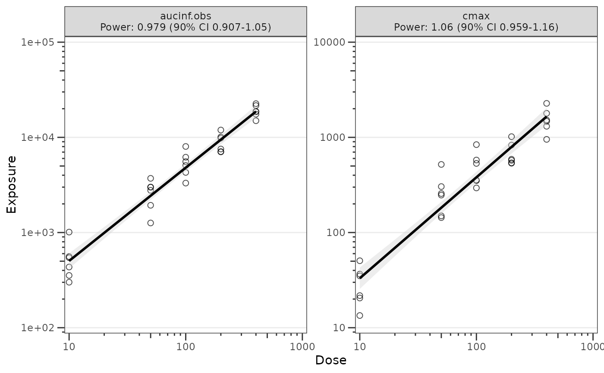
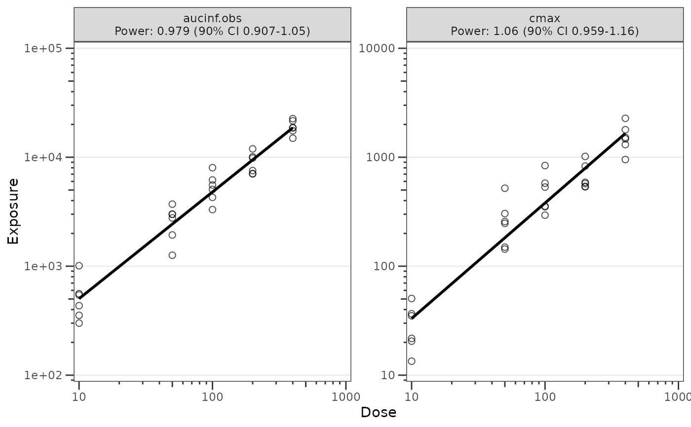

Build a dose-proportionality ggplot from a doseprop_stats object
Source: R/plot_doseprop.R
plot_build_doseprop.RdConstructs a log-log regression scatter plot from a df_doseprop() result
(or any object satisfying the doseprop_stats contract). Recovers the
observation rows and column names from the object's attributes, builds the
faceting label from the per-metric PowerCI text, and renders the scatter
trend layers.
Most users will reach this function indirectly via plot_doseprop().
Call plot_build_doseprop() directly when working from a manually-
constructed or cached doseprop_stats object — for example, plotting a
precomputed result from disk or a custom pipeline that produces compatible
columns and attributes.
Arguments
- stats
A
doseprop_statsobject (typically the output ofdf_doseprop()). Must contain$obsand$configslots withmetric_name_var,metric_value_var,dose_var, andci. Validated byvalidate_doseprop_stats()at entry.- theme
Named list of aesthetic parameters for the plot created by
plot_doseprop_theme(). Defaults can be viewed by runningplot_doseprop_theme()with no arguments.- se
logical to display confidence interval around regression. Default is
TRUE.
See also
Other dose proportionality:
df_doseprop(),
is_doseprop_stats(),
plot_doseprop(),
plot_doseprop_theme()
Examples
stats <- df_doseprop(dplyr::filter(data_sad_nca, PART == "Part 1-SAD"),
metrics = c("aucinf.obs", "cmax"))
plot_build_doseprop(stats)

plot_build_doseprop(stats, se = FALSE)
